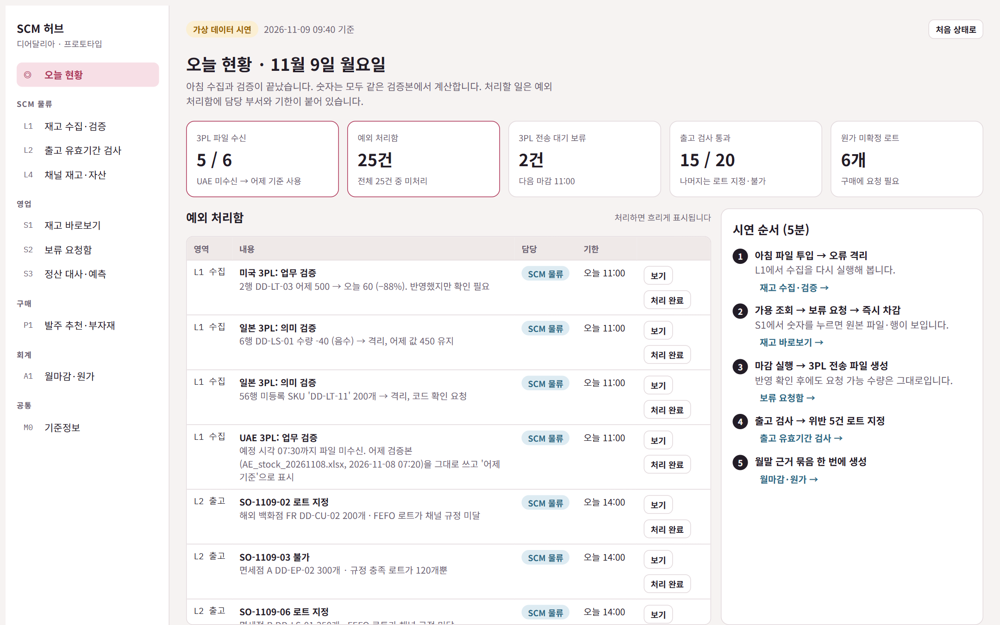
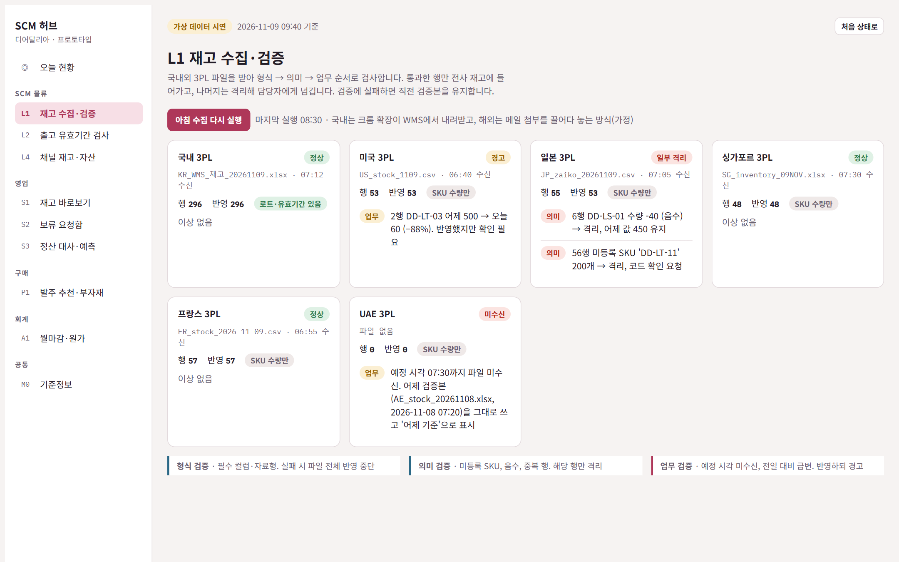
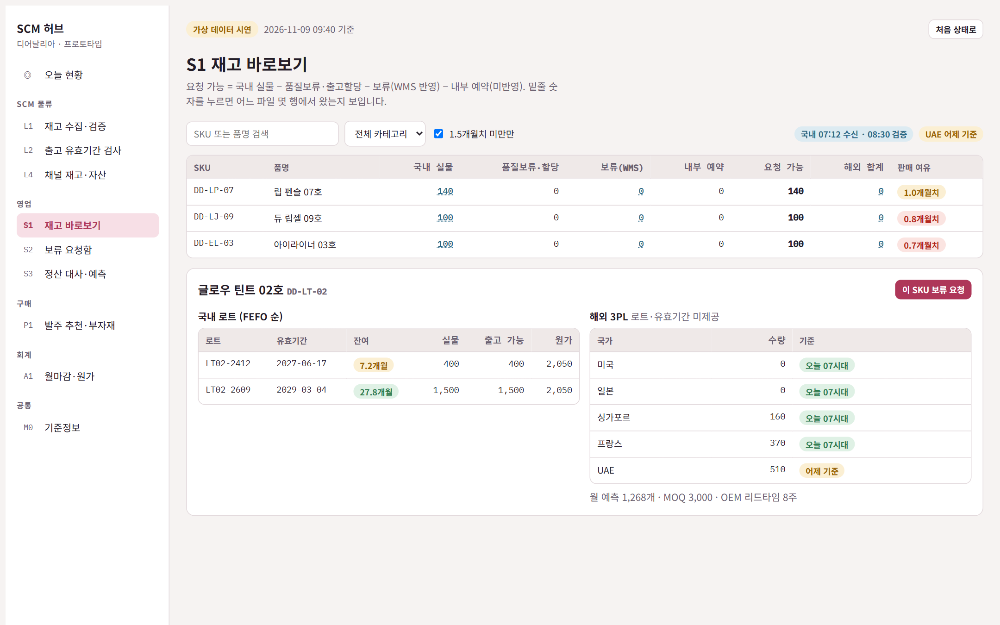
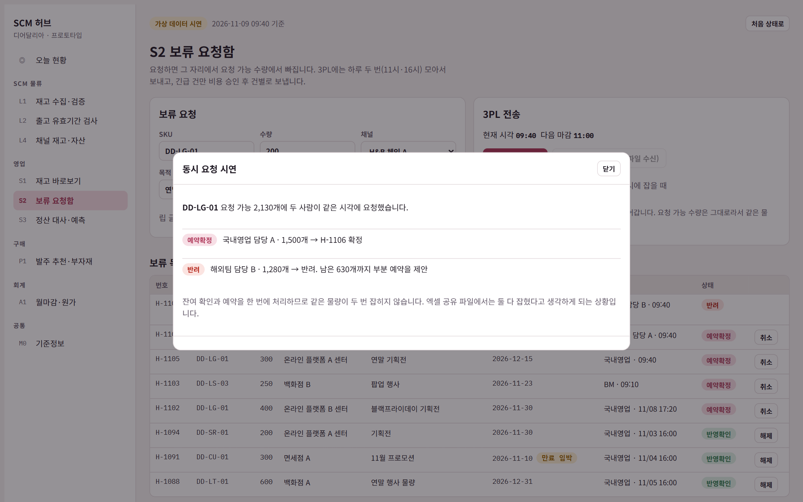
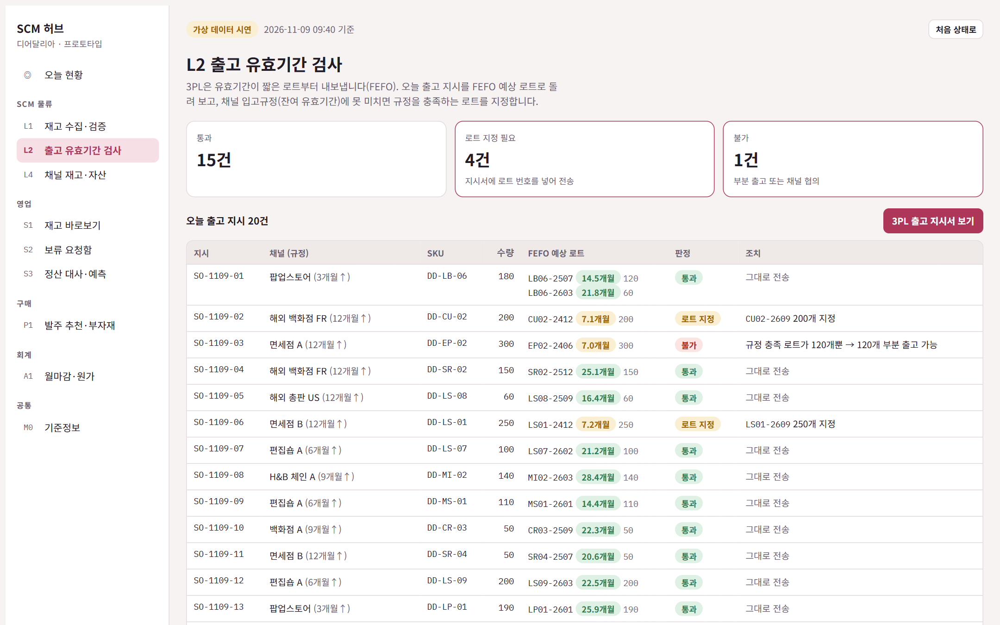
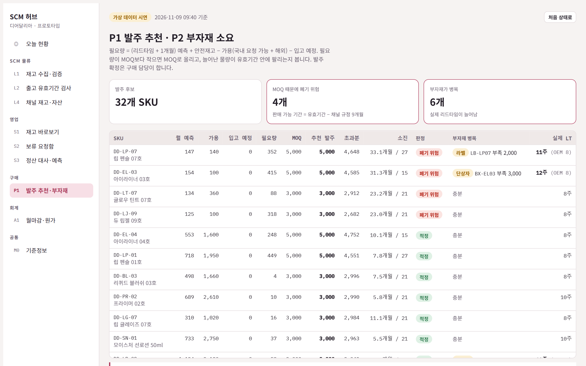

바람인터내셔날 AX · PM 트랙 과제
디어달리아 SCM 허브 + 부서별 자동화 도구 기획서
지원자 [이름] · 2026년 11월
임의 데이터로 구현한 프로토타입 포함
결론
① SCM 허브
국내외 재고를 매일 수집·검증해 실물·가용·회사 자산 재고를 같은 기준으로 계산합니다. 보류 요청과 업무 기준(입고규정·MOQ·리드타임)도 여기서 관리합니다.
② 부서별 자동화 도구 14종
엑셀 변환·대조·양식 작성을 HTML 도구와 크롬 확장으로 자동화합니다. 같은 데이터 규격을 쓰므로 나중에 허브 기능으로 합쳐집니다.
③ 단계적 확장
1단계 재고 조회·보류·기준정보 → 2단계 출고 검사·수불부 → 3단계 발주 추천·정산 대사. 각 단계는 효과가 확인되면 넘어갑니다.
1단계 기대 효과
재고 문의 → 직접 조회
보류 반영 며칠 → 당일 마감 배치
재고 차이 실사 때 발견 → 매일 발견
수치 목표는 0단계(2주)에 현재 소요 시간을 측정한 뒤 확정합니다 · 2
회사 이해
비건 색조 중심, 컬러가 많은 립 라인
SKU가 많고 컬러별 수요 편차가 큽니다. 컬러마다 단상자·라벨이 달라 부자재 종류도 늘어납니다(가정).
9주년 특가 같은 기간 한정 행사
행사 물량 보류 요청이 한꺼번에 몰립니다. 보류 처리 속도가 곧 매출 기회입니다.
해외 하이엔드 백화점 + 국내 H&B·온라인
채널마다 입고규정·재고 소유권·정산 방식이 다릅니다. 기준정보를 사람 기억에 둘 수 없습니다.
42개국 2,600개 매장, 2026년 CB 투자 유치
해외 확장이 빨라질수록 국가별 3PL이 늘어납니다. 사람이 손으로 취합하는 방식은 곧 한계에 닿습니다.
출처: deardahlia.kr, 한국경제 2026.07.12(하이트진로 CB 투자), 과제 자료 · 3
현재 업무 흐름
1 수요예측
영업·해외·BM
2 취합
구매
3 발주
구매·OEM
4 입고
물류·3PL
5 보류·할당
영업→물류
6 출고
물류·3PL
7 수불부·마감
물류·영업·회계
팀별 엑셀
정확도 미측정
손으로 합산
발주가 먼저 나가기도
MOQ·LT 경험 의존
부자재 병목
해외 로트 정보 없음
오류 검증 없음
반영 며칠
건별이면 야간 작업비
채널 규정을 기억으로 확인
대형 엑셀 수기 입력
근거 따로 수집
출발점은 매일 아침 담당자 1명이 국내외 3PL 데이터를 손으로 모은 재고 파일입니다. 여기서 틀리면 예측·발주·출고·마감이 모두 틀어집니다.
분홍색 = 숫자가 갈라지는 단계(원천이 바뀌거나 사람이 옮겨 적는 곳) · 4
문제 정의
[영업] 가용재고를 물류에 물어봄
[공통] 부서마다 재고 숫자가 다름
[물류] 해외 데이터 오류를 못 거름
[물류] 채널 재고는 기말에만 확인
[물류] 채널 입고규정을 기억으로 출고
[구매] MOQ·리드타임이 경험 의존
[공통] 인수인계·감사 때 근거 재수집
[물류] 보류 처리 기준이 없음
[구매] 예측 취합, OEM 정산 대사
[영업] 채널 정산서 대사·신고 자료
[물류] 로트별 수불부 수기 입력
[회계] 근거 수집, 원가 재요청
→ 허브의 재고 원장
→ 기준정보 마스터
→ 부서별 자동화 도구
[ ] = 문제를 겪는 부서 · 5
우선순위
효과
큼
효과
작음
1단계 · 바로 착수
국내 재고 조회 · 보류 요청함
재고 수집·검증 · 기준정보 마스터
2~3단계 · 기반 위에 확장
출고 유효기간 검사 · 수불부 · 채널 재고
발주 추천 · 부자재 소요 · 정산 대사
틈틈이 · 빠른 개선
예측 제출 양식 · 원가 미확정 알림
전자결재 입력 도우미
하지 않음 · 조건 바뀌면 재검토
해외 로트 추정(원천 없음) · ERP 연동(비용)
자동 발주 확정(구매 책임) · FEFO 엔진(3PL 역할)
← 쉬움 (파일로 데이터 확보, 다른 팀 의존 적음)
어려움 (협의·선행 기준 필요) →
가로축 = 실행 용이성, 세로축 = 업무 효과 · 6
해결 구조
원천 (지금 있는 것)
국내 3PL WMS 파일
해외 3PL 파일 (SKU 수량)
채널 정산서
OEM 청구서 · 예측 엑셀
수집·검증
형식 검사
코드 매핑
이상 변동
SCM 허브
재고 원장
기준정보 마스터
보류 원장
예외 처리함
부서 화면·도구
영업 4종
구매 3종
SCM 물류 4종
회계 3종
숫자마다 기준 시각과 원본 파일·행이 붙습니다. 숫자가 다르면 클릭해서 어디서 왔는지 봅니다.
ERP·그룹웨어는 연동하지 않고 정해진 양식 파일로 넘깁니다. 연동은 효과가 증명된 뒤 판단합니다.
3PL·채널 시스템은 바꾸지 않습니다 · 7
도구 형태 선택 기준
엑셀을 넣고 결과 엑셀을 받는 일
설치·서버가 없고 데이터가 PC 밖으로 나가지 않습니다. 몇 주 안에 만들어 바로 씁니다.
예: 정산서 표준화기, 발주 추천기
웹 시스템 안에서 하는 일
3PL 전산·그룹웨어 화면에서 다운로드와 양식 입력을 대신합니다. 최종 제출 클릭은 사람이 합니다.
예: 재고 자동 수집기, 전자결재 도우미
여러 사람이 같은 상태를 봐야 하는 일
권한, 변경 이력, 동시 요청 처리가 필요합니다. 재고·보류·기준정보처럼 하나뿐이어야 하는 데이터입니다.
예: 재고 바로보기, 보류 요청함
공통 규칙: 모든 도구는 같은 표준 SKU·채널 코드를 쓰고 결과를 허브에 올릴 수 있게 만듭니다. 도구가 쌓이면 그대로 허브가 됩니다.
크롬 확장은 3PL 이용 조건과 사내 보안 기준을 확인한 뒤 적용합니다(가정) · 8
부서별 자동화 도구 · 영업
| 도구 | 없애는 수작업 | 핵심 로직 | 형태 |
|---|---|---|---|
| S1 재고 바로보기 | 물류에 재고 문의, 보류·가용 따로 확인 | 가용 = 실물 − 보류 − 미반영 예약. 숫자마다 기준 시각과 원본 표시 | 허브 |
| S2 보류 요청함 | 메신저·엑셀 요청, 반영까지 며칠 | 요청 즉시 가용에서 예약 차감. 하루 2회 마감 때 3PL 전송 파일 자동 생성 | 허브 |
| S3 정산서 표준화기 | 채널별 양식·상품코드를 손으로 맞춤 | 채널 양식 템플릿 + 코드 매핑 → 표준 매출표. 출고 수량과 대조해 차이만 목록으로 | HTML |
| S4 예측 제출판 | 예측 엑셀 공유, 정확도 미측정 | 팀별 제출을 버전으로 잠금. 실적과 비교해 오차율과 과대·과소 경향 표시 | HTML |
S3은 새 채널 양식이 오면 AI가 컬럼·코드 매핑 후보를 제안하고, 담당자가 확정하면 템플릿으로 저장됩니다.
S4의 오차율은 구매의 안전재고 계산에 다시 쓰입니다. 예측이 틀린 만큼만 여유 재고를 둡니다.
측정: 재고 문의 건수, 보류 반영 시간, 월말 정산 작업 시간 · 9
부서별 자동화 도구 · 구매
| 도구 | 없애는 수작업 | 핵심 로직 | 형태 |
|---|---|---|---|
| P1 발주 추천기 | 예측 손 합산, 재고 여러 곳 확인 | 필요량 = 리드타임 동안 예측 + 안전재고 − 가용 − 입고예정 → MOQ로 올림. 초과분이 유효기간 안에 팔리는지 경고 | HTML → 허브 |
| P2 부자재 소요 계산기 | 부자재 부족을 늦게 발견 | 발주 후보를 BOM으로 펼쳐 용기·단상자·라벨 부족분 계산. 실제 리드타임 = 부자재 LT + OEM 생산 LT | HTML |
| P3 OEM 정산 대사기 | 월마감 자료 재작성, 단가 이견 | 입고 실적 × 계약 단가와 OEM 청구서를 품목·로트별로 대조해 수량·단가 차이만 표시 | HTML |
MOQ 경고 예: 필요 1,200개, MOQ 3,000개 → 1,800개 초과. 월 판매 300개면 6개월 소진. 남은 유효기간과 채널 입고규정을 빼면 판매 가능 기간이 부족해 폐기 위험으로 표시합니다.
발주 확정은 구매 담당이 합니다. 도구는 추천과 근거만 냅니다 · 10
부서별 자동화 도구 · SCM 물류
| 도구 | 없애는 수작업 | 핵심 로직 | 형태 |
|---|---|---|---|
| L1 재고 자동 수집기 | 매일 아침 3PL 전산을 돌며 취합 | 국내 WMS 다운로드 자동 실행, 해외 파일은 끌어다 놓기 → 표준화·검증 후 전사 재고 자동 생성 | 크롬 확장 + HTML |
| L2 출고 유효기간 검사기 | 채널 입고규정을 기억으로 확인 | 출고 지시 × 로트 재고 × 채널 규정 → 통과 · 경고 · 로트 지정 필요 | HTML |
| L3 수불부 자동 생성 | 대형 엑셀에 수기 입력 | 기초 + 입고 − 출고 ± 조정 = 기말을 로트별로 계산, 맞지 않는 줄만 표시 | 허브 |
| L4 채널 재고 추정판 | 채널 재고는 기말에만 확인 | 채널로 보낸 수량 − 채널 판매(정산서) = 추정 재고. 월중 차이 경고, 특정매입·위탁분은 회사 자산으로 집계 | 허브 |
보류는 개발 없이 정책으로 먼저 푼다: 하루 2회 마감(예: 11시·16시) 일괄 전송으로 야간 작업비를 없애고, 긴급 건만 비용 승인 후 건별 처리합니다. 시스템은 마감 시각과 처리 상태만 보여줍니다.
측정: 재고 파일 작성 시간, 규정 위반 출고 건수, 실사 차이 수량 · 11
부서별 자동화 도구 · 회계 + 공통
| 도구 | 없애는 수작업 | 핵심 로직 | 형태 |
|---|---|---|---|
| A1 월마감 근거 묶음 | 영업·물류에 근거를 따로 요청 | 채널별 매출(S3) + 출고 증빙 + 자산 판정(L4)을 매출결의 첨부 양식 그대로 한 파일로 | HTML → 허브 |
| A2 원가 미확정 알림 | 신규 로트 원가 재요청 반복 | 입고 로트 중 원가 없는 것을 구매에 요청 목록으로. OEM 단가 + 부자재 단가로 임시 원가 제안 | 허브 |
| A3 전자결재 도우미 | 매출결의 양식 손 입력 | A1 결과로 그룹웨어 양식 칸을 채움. 제출 클릭은 사람 | 크롬 확장 |
M0 기준정보 마스터 (전 부서 공통, 1단계)
표준 SKU · 채널 코드 매핑
채널 입고규정(잔여 유효기간)
거래유형(직매입·특정매입·위탁)
MOQ · 리드타임 · BOM · 단가
항목마다 담당 부서, 변경 이력, 근거 문서를 붙입니다. 담당자가 바뀌어도, 감사가 와도 여기서 찾습니다.
회계 처리와 승인은 회계·경영지원이 합니다. 도구는 자료를 모으고 채울 뿐입니다 · 12
핵심 로직 ① 재고 정의
창고 실물 재고 (물류가 보는 숫자)
회사 자산 재고 (회계가 보는 숫자)
직매입 채널에 납품한 물량은 소유권이 넘어가 자산에서 빠집니다.
재고 한 줄의 축:
SKU
보관처
소유 형태
상태
로트(해외는 미제공)
기준 시각
원본 파일·행
막대 비율은 설명용입니다. WMS 가용수량에 무엇이 빠져 있는지는 샘플 파일로 먼저 확인합니다 · 13
핵심 로직 ② 보류 처리
요청
영업
예약 확정
가용 즉시 차감
마감 전송
11시 · 16시
반영 확인
다음 WMS 파일
사용·해제
만료일 자동 알림
가용 부족 → 반려하고 대체 SKU·로트 제안
긴급 → 비용 승인 후 건별 전송
미반영 → 예외 처리함에 담당자 지정
잔여 확인과 예약을 서버에서 한 번에 처리합니다. 같은 물량을 두 명이 잡을 수 없습니다.
WMS 반영이 확인되면 내부 예약을 지우고 WMS 보류로 넘깁니다. 한 번만 빠집니다.
행사 종료일이 지나면 해제 알림을 보냅니다. 잊힌 보류가 가용을 막지 않습니다.
마감 시각은 예시이며 3PL 작업 시간에 맞춰 협의합니다 · 14
핵심 로직 ③ 출고 유효기간 검사
국내 창고 · 립 틴트 #03 (예시)
로트 A · 잔여 7개월 · 400개
로트 B · 잔여 14개월
3PL은 FEFO로 로트 A부터 내보냅니다.
면세점 300개 · 규정 12개월 이상
FEFO면 로트 A(7개월) → 위반
로트 B 지정
자사몰 300개 · 규정 6개월 이상
로트 A(7개월) → 기준 충족
통과
출고 전: 출고 지시 × 로트 재고 × 채널 규정을 대조해 통과 · 로트 지정 · 불가(대체 제안)로 나눕니다.
배정 추천: 잔여기간이 짧은 로트는 규정이 느슨한 채널·행사로 먼저 돌려 폐기를 줄입니다.
로트·규정 수치는 예시입니다. 해외는 로트 정보가 없어 국내 출고부터 적용합니다 · 15
프로토타입
브랜드 2 · SKU 120
로트 300 · 거래 90일치
국내 3PL 1 + 해외 5개국
채널 12곳
직매입 4 · 특정매입 3 · 위탁 3 · 플랫폼 센터 2
해외 파일 하루 누락
미등록 채널 코드 3건
음수 재고 1건
규정 미달 출고 지시 5건
정산 수량 차이 4건 · 원가 없는 로트 6건
1. 아침 파일 투입 → 오류 격리
2. 가용 조회 → 보류 요청 → 즉시 차감
3. 16시 마감 → 3PL 전송 파일 생성
4. 출고 검사 → 위반 5건 로트 지정
5. 월말 근거 묶음 한 번에 생성
AI 코딩 도구로 허브와 도구를 단일 HTML로 구현했습니다. 오류를 일부러 넣어 검증이 실제로 잡아내는지까지 보여줍니다.
직접 써 보기: claude.ai/artifact/HYXGEfar92dHnofVKamNXa · 모든 데이터는 가상입니다 · 16
프로토타입 화면 ① 아침 현황과 수집·검증

오늘 현황 · 처리할 일 25건이 담당 부서와 기한을 달고 한 곳에 모입니다.

L1 수집·검증 · UAE 미수신, 일본 음수·미등록 SKU, 미국 급감을 자동으로 걸러냅니다.
가상 데이터로 구현한 화면입니다 · 17
프로토타입 화면 ② 영업: 재고 조회와 보류

S1 재고 바로보기 · 로트별 잔여기간과 해외 수량을 기준 시각과 함께 봅니다.

S2 보류 요청함 · 같은 물량을 동시에 잡으면 한 건만 확정되고 나머지엔 부분 예약을 제안합니다.
가상 데이터로 구현한 화면입니다 · 18
프로토타입 화면 ③ 물류·구매: 출고 검사와 발주 추천

L2 출고 검사 · 20건 중 FEFO로는 규정을 어기는 4건을 로트 지정으로 바꾸고, 1건은 불가로 잡습니다.

P1 발주 추천 · MOQ 초과분의 폐기 위험과 부자재 때문에 늘어난 실제 리드타임을 보여줍니다.
가상 데이터로 구현한 화면입니다 · 19
로드맵
0단계 · 1~2주
현재 작업 시간 측정, 샘플 파일 확보, 재고 정의 합의
1단계 · 3~10주
L1 수집기, S1 조회, S2 보류, M0 마스터
2단계 · 11~18주
L2 검사기, L3 수불부, L4 채널 재고, A2 원가
3단계 · 19~26주
P1~P3, S3·S4, A1·A3
관문 기준(안)
관문 1 실물·가용·자산 재고 정의를 영업·물류·회계가 서명
관문 2 엑셀과 2주 병행해 모든 차이의 원인이 설명됨
관문 3 자동 수불부가 수기 수불부와 같은 결과를 냄
기간은 AX팀 엔지니어 2명 기준 가정이며, 0단계 후 다시 산정합니다 · 20
개발부터 운영까지
① 현재 측정
② 임의 데이터 시제품
③ 실데이터 병행 2주
④ 일부 사용자 도입
⑤ 기존 엑셀 폐지
누가 무엇을 정하는지
| 역할 | 책임 |
|---|---|
| PM | 범위·우선순위, 수용 기준, 지표 관리 |
| 엔지니어 | 구현, 데이터 수집·검증, 모니터링 |
| 현업 오너 | 업무 기준 확정과 수용 테스트(부서별 1명) |
| 3PL | 파일 양식, 보류 마감 시각 협의 |
운영 규칙
· 2주 스프린트, 매주 현업 시연
· 매일 아침 수집 결과를 담당자에게 알림
· 파일 양식이 바뀌면 반영 중단, 직전 검증본 유지
· 장애 때는 정해진 엑셀 양식으로 받고 복구 후 반영
· 월 1회 지표 리뷰로 다음 우선순위 결정
업무 기준의 최종 책임: 보류·출고는 SCM 물류, 발주는 구매, 자산·원가는 회계 · 21
KPI
영업 재고 문의 건수
메신저·전화 2주 집계
재고 파일 작성 시간
물류 담당 작업 기록
보류 요청 → 반영 시간
평균과 90백분위
제시간 검증 완료율
매일 수집 로그
규정 위반 출고 건수
채널 반품·입고 거부 사유
실사 차이 수량
분기 실사 vs 장부
시스템 접수 보류 비율
전체 보류 요청 대비
주간 사용자 수
부서별 접속 기록
폐지된 공용 엑셀 수
재고·보류·수불부 등
목표 수치는 0단계 측정 후 현업과 함께 정합니다 · 22
리스크
| 리스크 | 신호 | 대응 |
|---|---|---|
| 원천 파일 지연·누락 | 예정 시각에 파일 없음 | 마지막 검증 시각을 크게 표시, 오래된 재고로는 보류 제한 |
| 파일 양식 변경 | 형식 검증 실패 | 반영 중단, 직전 검증본 유지, 매핑 수정 후 재처리 |
| WMS·내부 예약 불일치 | 반영 확인 안 됨 | 요청 번호로 대사, 예외 처리함에 담당자·기한 지정 |
| 엑셀 병행 장기화 | 이중 입력 불만 | 병행 종료 조건과 엑셀 폐지일을 미리 합의 |
| 현업 기준 합의 지연 | 관문 통과 못 함 | 부서별 현업 오너 지정, 미결 항목은 임시 기준으로 표시하고 진행 |
| 크롬 확장 사용 불가 | 3PL 화면 변경·약관 | 수동 파일 업로드로도 같은 흐름이 돌게 설계, API 협의 병행 |
검증을 통과하지 못한 데이터는 배포하지 않는다는 원칙이 모든 대응의 바탕입니다 · 23
AI 활용
새 채널 정산서의 컬럼과 상품코드를 표준 코드에 맞춰 제안합니다. 담당자가 확정하면 템플릿이 됩니다.
채널 계약서·입고 가이드에서 잔여 유효기간·라벨 조건을 뽑아 원문과 함께 보여줍니다.
예외가 생기면 관련 파일·요청 이력을 모아 가능성 높은 원인을 요약해 담당자 확인을 돕습니다.
“왜 가용이 줄었지?”에 검증된 데이터와 보류 이력을 근거로 답합니다.
개발에도 AI 코딩 도구를 기본으로 씁니다. 엔지니어가 도구 14종을 짧은 주기로 만들고 고칠 수 있는 이유입니다.
AI가 틀려도 재고 숫자와 업무 상태는 자동으로 바뀌지 않습니다 · 24
가정 목록
1. AX팀 엔지니어 2명이 전담합니다.
2. 국내 WMS 파일에 로트·유효기간·가용수량 컬럼이 있습니다.
3. 해외 3PL은 하루 1회 SKU별 수량 파일을 줍니다.
4. 채널 정산서는 엑셀 또는 CSV로 받습니다.
5. 보류 마감 시각(11시·16시)은 3PL과 협의할 수 있습니다.
6. 크롬 확장 사용이 사내 보안과 3PL 이용 조건상 허용됩니다.
7. 컬러별로 단상자·라벨이 다릅니다.
8. MOQ·유효기간·로트 수량 등 예시 수치는 설명용입니다.
가정이 틀리면 해당 도구의 형태나 순서를 바꾸고, 범위는 유지합니다 · 25
부록
프로토타입 화면마다 어떤 문제를 풀고, 어느 부서가 올리고 확인하고 요청하고 확정하는지, 어떤 순서로 쓰는지 정리했습니다.
01
화면별 역할표
02
하루·한 달 운영 리듬
03
화면별 사용법 10장
모든 화면은 가상 데이터로 구현한 프로토타입입니다 · 26
부록 · 운영 매뉴얼
데이터·요청 건을 넣음
검토·판정
다른 부서에 행동 요청
최종 결정
보기만 함
외부 시스템에 적용
| 화면 | 국내영업 | 해외팀 | BM | 구매 | SCM물류 | 회계 | 3PL |
|---|---|---|---|---|---|---|---|
| 오늘 현황 | 확인 | 확인 | 확인 | 확인 | 확인 | 확인 | — |
| L1 재고 수집·검증 | — | — | — | — | 올림 확인 요청 | — | 올림 |
| S1 재고 바로보기 | 조회 요청 | 조회 요청 | 조회 요청 | 조회 | — | — | — |
| S2 보류 요청함 | 요청 확정 | 요청 확정 | 요청 확정 | — | 확정 확인 | — | 반영 |
| L2 출고 유효기간 검사 | 올림 | 올림 | — | — | 확인 요청 | — | 반영 |
| L4 채널 재고·자산 | 올림 확인 | 올림 확인 | — | — | 확인 | 조회 | — |
| S3 정산 대사 · S4 예측 | 올림 확정 | 올림 | 올림 | 조회 | 확인 | — | — |
| P1 발주 추천 · P2 부자재 | 올림 | 올림 | 올림 확인 | 확인 확정 | — | — | — |
| A1 월마감 · A2 원가 | — | — | — | 확정 | — | 확인 요청 확정 | — |
| M0 기준정보 | 올림 | 올림 | — | 올림 | 확인 | 조회 | — |
시스템이 자동으로 하는 검증·계산은 표에서 뺐습니다. 부서명과 역할은 0단계 인터뷰로 확정합니다 · 27
운영 매뉴얼 · 운영 리듬
매일
07:30
3PL
재고 파일 송부, 국내는 자동 다운로드
L1
08:30
시스템
3단계 검증, 예외 처리함에 등록
L1
09:00
전 부서
예외 처리함에서 내 부서 건 처리
오늘 현황
수시
영업·해외·BM
가용 조회 후 보류 요청, 즉시 차감
S1 · S2
11:00 · 16:00
SCM물류
보류 마감 실행, 3PL 전송
S2
14:00
SCM물류
출고 검사, 로트 지정 지시서 전송
L2
다음날 아침
SCM물류
새 파일로 WMS 반영 확인
S2
매월
1~3일
국내영업
채널 정산서 올림, 매핑·대사
S3
3일
영업·해외·BM
판매 예측 제출, 오차율 확인
S4
5일
구매
발주 추천 검토·확정, 부자재 선발주
P1 · P2
5일
회계
근거 묶음 생성, 원가 확정 요청
A1 · A2
월말
SCM물류·영업
채널 재고 대조, 차이 확인
L4
변경 시
기준 담당
기준정보 수정, 팀장 승인
M0
시각·날짜는 예시입니다. 3PL 마감 시각과 마감 일정은 0단계에서 협의해 정합니다 · 28
운영 매뉴얼 · 오늘 현황 · 예외 처리함
이 화면이 푸는 문제
[공통] 할 일이 메신저·전화로 흩어져 누가 무엇을 하는지 모름
[공통] 부서마다 보는 재고 숫자가 다름
누가 무엇을
시스템 · 검증에서 걸린 건을 담당 부서·기한과 함께 등록
각 부서 담당 · 담당 열에서 내 부서 건을 보고 처리
처리한 담당자 · 처리 완료를 눌러 닫음
SCM물류 팀장 · 11시 전 미처리 건 점검
사용 순서
1
요약 카드 5개로 오늘 상태를 봅니다. 붉은 테두리는 처리할 일이 있다는 뜻입니다.
2
예외 처리함의 담당·기한 열에서 내 부서 건을 찾습니다.
3
보기를 누르면 해당 화면의 그 행으로 이동합니다.
4
처리 후 처리 완료를 누르면 흐리게 바뀌고 미처리 수가 줄어듭니다.
운영 매뉴얼 · 가상 데이터로 구현한 프로토타입 화면 · 29
운영 매뉴얼 · L1 재고 수집·검증
이 화면이 푸는 문제
[물류] 담당자 1명이 매일 아침 국내외 3PL 파일을 손으로 합침
[물류] 해외 데이터 오류(음수·미등록 코드)를 못 거름
누가 무엇을
3PL · 07:30까지 재고 파일 송부
SCM물류 · 국내는 크롬 확장이 자동 다운로드, 해외는 메일 첨부를 끌어다 놓기
시스템 · 형식 → 의미 → 업무 순서로 검증, 틀린 행만 격리
SCM물류 → 3PL · 격리·미수신 건 재송부와 코드 확인 요청
사용 순서
1
파일을 넣었거나 다시 받았으면 아침 수집 다시 실행을 누릅니다.
2
국가별 카드의 배지를 봅니다: 정상 · 경고 · 일부 격리 · 미수신.
3
격리된 행은 사유가 적혀 있습니다. 그대로 3PL에 확인을 요청합니다.
4
미수신이면 어제 검증본을 쓰고 '어제 기준'으로 표시됩니다. 3PL에 재송부를 요청합니다.
운영 매뉴얼 · 가상 데이터로 구현한 프로토타입 화면 · 30
운영 매뉴얼 · S1 재고 바로보기
이 화면이 푸는 문제
[영업] 가용재고를 물어보려고 물류에 메신저·전화
[공통] 같은 SKU인데 부서마다 숫자가 다름
누가 무엇을
국내영업 · 해외팀 · BM · 요청 가능 수량과 판매 여유를 직접 확인
조회한 사람 · 숫자를 눌러 어느 파일 몇 행에서 왔는지 확인
조회한 사람 → S2 · 필요하면 그 자리에서 보류 요청
시스템 · 요청 가능 = 실물 − 품질보류·할당 − 보류 − 내부 예약
사용 순서
1
SKU·품명으로 찾거나, '1.5개월치 미만'으로 부족한 상품만 봅니다.
2
요청 가능 열이 지금 잡을 수 있는 수량입니다.
3
밑줄 숫자를 누르면 원본 파일과 행이 보입니다. 숫자가 다르면 여기서 확인합니다.
4
기준 시각 배지를 봅니다. '어제 기준'이면 그 나라 숫자는 하루 전 값입니다.
5
SKU를 열어 로트를 보고, 이 SKU 보류 요청으로 넘어갑니다.
운영 매뉴얼 · 가상 데이터로 구현한 프로토타입 화면 · 31
운영 매뉴얼 · S2 보류 요청함
이 화면이 푸는 문제
[물류] 보류 처리 기준이 없어 건별로 받아 반영에 며칠
[물류] 건별 요청이면 3PL 야간 작업비 발생
[영업] 두 사람이 같은 물량을 동시에 잡음
누가 무엇을
국내영업 · 해외팀 · BM · SKU·수량·채널·해제일 입력 → 즉시 예약확정
SCM물류 · 11시·16시 마감 실행 → 3PL 전송 파일 생성
3PL · WMS에 보류 등록
SCM물류 · 다음 파일에서 반영 확인 → 상태 '반영확인'
요청자 · 행사가 끝나면 해제, 만료 임박 알림 확인
사용 순서
1
SKU·수량·채널·목적·해제 예정일을 넣고 요청하기를 누릅니다.
2
목록에 예약확정으로 올라오고, 요청 가능 수량에서 바로 빠집니다.
3
SCM물류는 마감 시각에 마감 실행을 눌러 3PL 전송 파일을 만듭니다.
4
다음 재고 파일이 오면 WMS 반영 확인을 누릅니다. 수량은 다시 빠지지 않습니다.
5
만료 임박 표시가 뜨면 연장하거나 해제합니다.
운영 매뉴얼 · 가상 데이터로 구현한 프로토타입 화면 · 32
운영 매뉴얼 · L2 출고 유효기간 검사
이 화면이 푸는 문제
[물류] 채널별 잔여 유효기간 규정을 기억으로 확인
[영업] 규정 미달 출고로 입고 거부·반품
누가 무엇을
국내영업 · 해외팀 · 채널 주문으로 출고 지시 등록
시스템 · FEFO 예상 로트 vs 채널 규정(M0) 비교
SCM물류 · 로트 지정·불가 건 검토
3PL · 지정 로트로 출고
SCM물류 → 영업 · 불가 건은 부분 출고·채널 협의 요청
사용 순서
1
요약 카드로 통과·로트 지정·불가 건수를 봅니다.
2
판정 열: 통과는 그대로, 로트 지정은 다른 로트로, 불가는 규정 충족 로트 부족.
3
조치 열의 로트 번호가 지시서에 자동으로 들어갑니다.
4
불가 건은 가능한 수량이 적혀 있습니다. 영업에 부분 출고 여부를 묻습니다.
5
3PL 출고 지시서 보기로 전송 파일을 확인하고 보냅니다.
운영 매뉴얼 · 가상 데이터로 구현한 프로토타입 화면 · 33
운영 매뉴얼 · L4 채널 재고·자산
이 화면이 푸는 문제
[물류] 채널 재고는 기말 실사 때만 확인
[회계] 특정매입·위탁 재고의 자산 근거를 따로 모음
누가 무엇을
국내영업 · 해외팀 · 채널 재고 보고·정산서 업로드
시스템 · 추정 재고 = 출고 − 판매, 거래유형으로 자산 여부 판정
SCM물류 · 영업 · 차이 건을 채널과 확인
회계 · 채널별 자산 금액을 마감에 사용
사용 순서
1
회사 자산 막대로 국내·해외·채널 비중을 봅니다.
2
거래유형 배지: 직매입은 납품 시 자산이 아니고, 나머지는 팔리기 전까지 회사 자산입니다.
3
대조 열의 '차이'는 채널 보고와 추정 재고가 다른 곳입니다. 채널에 확인합니다.
4
'보고 없음'은 분기 실사 대상으로 표시됩니다.
5
자산 금액은 A1 월마감에 그대로 넘어갑니다.
운영 매뉴얼 · 가상 데이터로 구현한 프로토타입 화면 · 34
운영 매뉴얼 · S3 정산 대사 · S4 예측 정확도
이 화면이 푸는 문제
[영업] 채널마다 다른 정산서·상품코드를 손으로 대사
[구매] 팀별 예측의 정확도를 아무도 재지 않음
누가 무엇을
국내영업 · 월초 채널 정산서 업로드
시스템 · 표준 SKU 변환, 매핑 후보 추천(실제는 AI)
국내영업 · 매핑 확정 → M0에 저장, 다음 달부터 자동
국내영업 → 채널·물류 · 수량 차이 건 확인 요청
구매 · BM · S4 팀별 예측 오차율 확인
사용 순서
1
파일명과 요약 배지로 일치·수량 차이·매핑 필요 건수를 봅니다.
2
매핑 필요 행은 추천 SKU를 확인하고 매핑 확정을 누릅니다.
3
수량 차이 행은 채널 수량과 우리 출고를 비교해 채널이나 물류에 확인합니다.
4
아래 S4 표에서 팀별 예측 오차와 편향을 봅니다.
운영 매뉴얼 · 가상 데이터로 구현한 프로토타입 화면 · 35
운영 매뉴얼 · P1 발주 추천 · P2 부자재 소요
이 화면이 푸는 문제
[구매] 팀별 예측을 손으로 취합해 발주
[구매] MOQ·리드타임을 경험으로 판단
[구매] 부자재가 늦어 완제품 입고가 밀림
누가 무엇을
국내영업 · 해외팀 · BM · 월 1회 판매 예측 제출(S4 양식)
시스템 · 필요량·MOQ 올림·소진 기간·부자재 병목 계산
구매 · 폐기 위험·병목 SKU 검토
구매 → BM · 폐기 위험 SKU는 판촉·MOQ 협상 협의
구매 · OEM 발주와 부자재 선발주 확정
사용 순서
1
요약 카드로 발주 후보, 폐기 위험, 부자재 병목 수를 봅니다.
2
추천 발주와 초과분: MOQ 때문에 더 사는 수량입니다.
3
폐기 위험은 늘어난 물량이 판매 가능 기간 안에 안 팔린다는 뜻입니다.
4
부자재 병목은 부족 수량과 함께 표시됩니다. 실제 LT를 보고 먼저 발주합니다.
운영 매뉴얼 · 가상 데이터로 구현한 프로토타입 화면 · 36
운영 매뉴얼 · A1 월마감 근거 묶음 · A2 원가 미확정
이 화면이 푸는 문제
[회계] 마감 때마다 영업·물류에 근거를 따로 요청
[회계] 원가 없는 로트를 구매에 재요청
[공통] 감사·인수인계 때 근거를 다시 수집
누가 무엇을
시스템 · 출고(L1)·정산(S3)·채널 자산(L4)을 묶음
회계 · 채널별 매출·자산과 근거 확인
회계 → 구매 · 원가 미확정 로트의 OEM 단가 확정 요청
구매 · 임시 원가 제안을 보고 단가 확정
회계 · 근거 묶음 생성 후 마감
사용 순서
1
마감 월의 채널별 출고·매출 인식·기말 자산을 봅니다.
2
근거 열에 어떤 자료에서 왔는지 적혀 있습니다.
3
근거 묶음 미리보기로 마감 파일을 한 번에 만듭니다.
4
A2 원가 미확정 로트는 임시 원가 제안과 함께 구매에 확정을 요청합니다.
운영 매뉴얼 · 가상 데이터로 구현한 프로토타입 화면 · 37
운영 매뉴얼 · M0 기준정보
이 화면이 푸는 문제
[물류] 채널 입고규정이 담당자 기억에만 있음
[구매] MOQ·리드타임이 개인 파일에 흩어짐
[공통] 담당자가 바뀌면 기준이 사라짐
누가 무엇을
국내영업 · 해외팀 · 채널 계약이 바뀌면 입고 규정·정산 주기 수정
구매 · MOQ·OEM 리드타임·유효기간·부자재 리드타임 수정
각 팀장 · 변경 승인
시스템 · 누가·언제·무엇을 근거로 바꿨는지 기록, 모든 도구가 이 값을 사용
사용 순서
1
채널 기준 표: 입고 규정(잔여 개월)은 L2 출고 검사가 그대로 씁니다.
2
담당 열이 그 채널 기준을 고치는 부서입니다.
3
SKU 발주 조건은 구매가 관리하고 P1 발주 추천이 씁니다.
운영 매뉴얼 · 가상 데이터로 구현한 프로토타입 화면 · 38